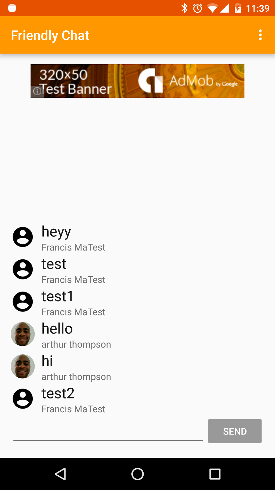
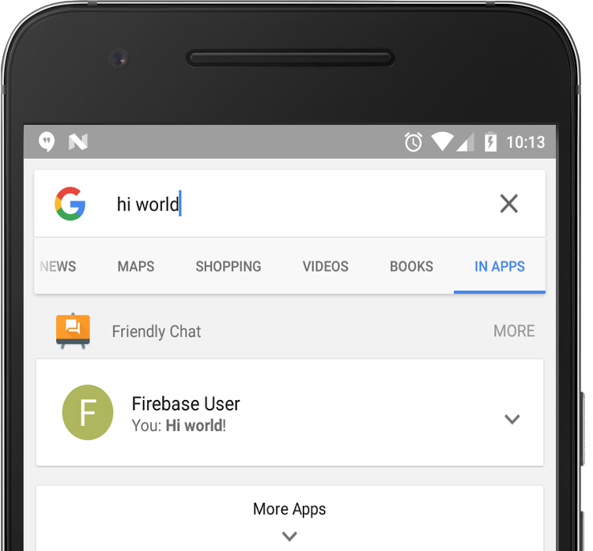
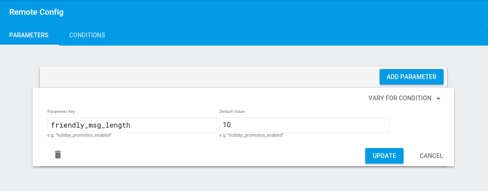
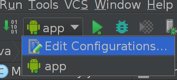
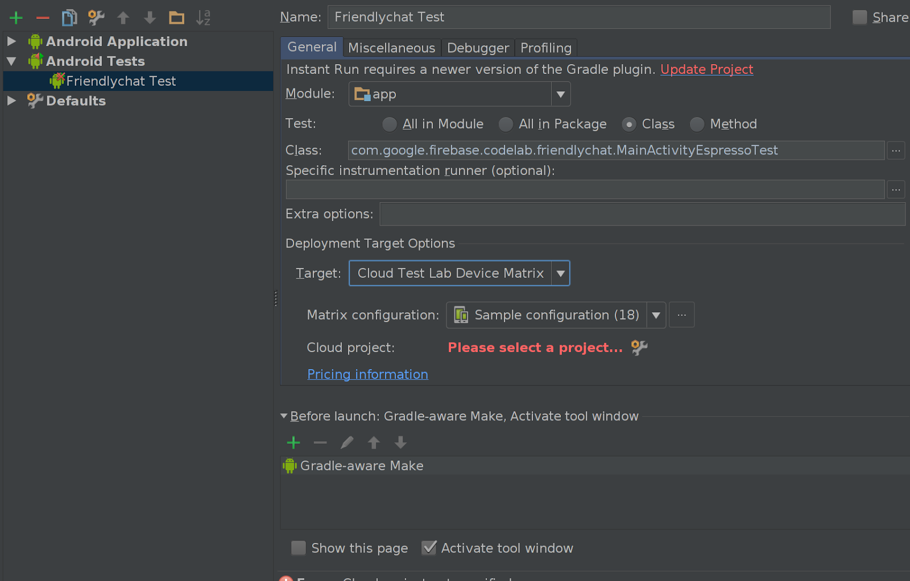
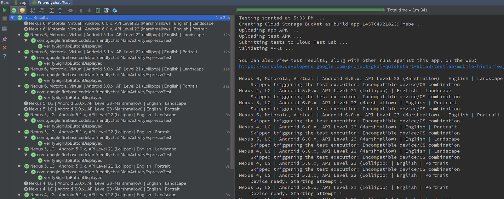
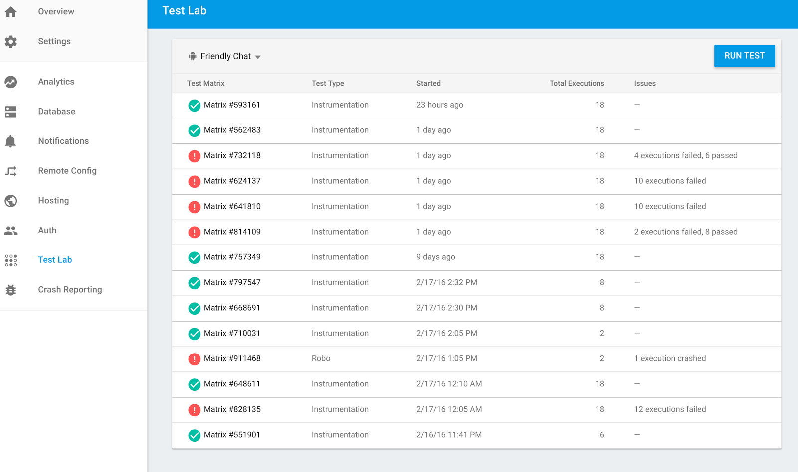

Image: Working Friendly Chat app.
Welcome to the GDG Jogja codelab. In this codelab, you'll learn how to use the Firebase platform to create a simple marketplace app using firebase. In this case we will try to build app like OLX Android Apps using firebase.
What you learn to do
- Allow users to sign in.
- Sync data using the Firebase Realtime Database.
- Receive background messages with Firebase Notifications.
- Configure an application with Firebase Remote Config.
- Track application usage flows with Firebase Analytics.
- Allow users to send invitations to install with Firebase Invites.
- Display ads with AdMob.
- Report crashes with Firebase Crash Reporting.
- Test your app with Firebase Test Lab.
What you need
- Android Studio version 2.1+.
- Sample code.
- A test device with Android 2.3+ and Google Play services 9.8 or later, or an Emulator with Google Play services 9.8 or later
- Google app version 6.6+ (only needed for testing Firebase App Indexing in Step 9)
- If using a device connection cable.
After gathering the needed items, set up your environment.
Clone the GitHub repository from the command line:
$ git clone https://github.com/firebase/friendlychat
From Android Studio, select the android-start directory ( ) from the sample code download (File > Open > .../firebase-codelabs/android-start).
) from the sample code download (File > Open > .../firebase-codelabs/android-start).
You should now have the android-start project open in Android Studio.
- Go to the Firebase console.
- Select Create New Project, and name your project "FriendlyChat."
Connect your Android app
- From the overview screen of your new project,
click Add Firebase to your Android app. - Enter the codelab's package name:
com.google.firebase.codelab.friendlychat. - Enter the SHA1 of your signing keystore. If you are using the standard debug keystore, use the command below to find the SHA1 hash:
keytool -exportcert -alias androiddebugkey -keystore ~/.android/debug.keystore -list -v -storepass androidAdd google-services.json file to your app
After adding the package name and SHA1 and selecting Continue, your browser automatically downloads a configuration file that contains all the necessary Firebase metadata for your app. Copy the google-services.json file into the app directory in your project.
Add google-services plugin to your app
The google-services plugin uses the google-services.json file to configure your application to use Firebase. The following line should already be added to the end of the build.gradle file in the app directory of your project (check to confirm):
apply plugin: 'com.google.gms.google-services'Sync your project with gradle files
To be sure that all dependencies are available to your app, you should sync your project with gradle files at this point. Select Sync Project with Gradle Files ( ) from the Android Studio tool bar.
) from the Android Studio tool bar.
Now that you have imported the project into Android Studio and configured the google-services plugin with your JSON file, you are ready to run the app for the first time. Connect your Android device, and click Run ( )in the Android Studio toolbar.
)in the Android Studio toolbar.
The app should launch on your device. At this point, you should see an empty message list, and sending and receiving messages will not work. In the next section, you authenticate users so they can use Friendly Chat.
Let's require a user to sign in before reading or posting any Friendly Chat messages.
Firebase Realtime Database Rules
Access to your Firebase Database is configured by a set of rules written in a JSON configuration language.
Go to your project in the Firebase console, select Database and then the Rules tab. Confirm that the rules set on the database look like the following:
{
"rules": {
".read": "auth != null",
".write": "auth != null"
}
}For more information on how this works (including documentation on the "auth" variable) see the Firebase security documentation.
Configure Authentication APIs
Before your application can access the Firebase Authentication APIs on behalf of your users, you will have to enable it
- Navigate to the Firebase console and select your project
- Select Auth
- Select the Sign In Method tab
- Toggle the Google switch to enabled (blue)
- Press Save on the resulting dialog
If you get errors later in this codelab with the message "CONFIGURATION_NOT_FOUND", come back to this step and double check your work.
Add Firebase Auth dependency
The firebase-auth allows easy management of authenticated users of your application. Confirm the existence of this dependency in your app/build.gradle file.
app/build.gradle
compile 'com.google.firebase:firebase-auth:10.0.0'Add an Auth instance variables in the MainActivity class:
MainActivity.java (instance variable)
// Firebase instance variables
private FirebaseAuth mFirebaseAuth;
private FirebaseUser mFirebaseUser;Check for current user
Modify MainActivity.java to send the user to the sign-in screen whenever they open the app and are unauthenticated.
Add the following to the onCreate method after mUsername has been initialized:
MainActivity.java
// Initialize Firebase Auth
mFirebaseAuth = FirebaseAuth.getInstance();
mFirebaseUser = mFirebaseAuth.getCurrentUser();
if (mFirebaseUser == null) {
// Not signed in, launch the Sign In activity
startActivity(new Intent(this, SignInActivity.class));
finish();
return;
} else {
mUsername = mFirebaseUser.getDisplayName();
if (mFirebaseUser.getPhotoUrl() != null) {
mPhotoUrl = mFirebaseUser.getPhotoUrl().toString();
}
}Then add a new case to onOptionsItemSelected() to handle the sign out button:
MainActivity.java
@Override
public boolean onOptionsItemSelected(MenuItem item) {
switch (item.getItemId()) {
case R.id.sign_out_menu:
mFirebaseAuth.signOut();
Auth.GoogleSignInApi.signOut(mGoogleApiClient);
mUsername = ANONYMOUS;
startActivity(new Intent(this, SignInActivity.class));
return true;
default:
return super.onOptionsItemSelected(item);
}
}
Now we have all of the logic in place to send the user to the sign-in screen when necessary. Next we need to implement the sign-in screen to properly authenticate users.
Implement the Sign-In screen
Open the file SignInActivity.java. Here a simple Sign-In button is used to initiate authentication. In this step you will implement the logic to Sign-In with Google then use that Google account to authenticate with Firebase.
Add an Auth instance variables in the SignInActivity class:
SignInActivity.java
// Firebase instance variables
private FirebaseAuth mFirebaseAuth;Then, edit the onCreate() method to initialize Firebase in the same way you did in MainActivity:
SignInActivity.java
// Initialize FirebaseAuth
mFirebaseAuth = FirebaseAuth.getInstance();Next, initiate signing in with Google. Update SignInActivity's onClick method to look like this:
SignInActivity.java
@Override
public void onClick(View v) {
switch (v.getId()) {
case R.id.sign_in_button:
signIn();
break;
}
}Add the required signIn method that actually presents the user with the Google Sign In UI.
SignInActivity.java
private void signIn() {
Intent signInIntent = Auth.GoogleSignInApi.getSignInIntent(mGoogleApiClient);
startActivityForResult(signInIntent, RC_SIGN_IN);
}
Next, handle the result of the Google Sign In, add onActivityResult method to SignInActivity to handle the sign in result. Once the result of the Google Sign In was successful, use the account to authenticate with Firebase:
SignInActivity.java
@Override
public void onActivityResult(int requestCode, int resultCode, Intent data) {
super.onActivityResult(requestCode, resultCode, data);
// Result returned from launching the Intent from GoogleSignInApi.getSignInIntent(...);
if (requestCode == RC_SIGN_IN) {
GoogleSignInResult result = Auth.GoogleSignInApi.getSignInResultFromIntent(data);
if (result.isSuccess()) {
// Google Sign In was successful, authenticate with Firebase
GoogleSignInAccount account = result.getSignInAccount();
firebaseAuthWithGoogle(account);
} else {
// Google Sign In failed
Log.e(TAG, "Google Sign In failed.");
}
}
}
Add the required firebaseAuthWithGoogle method to authenticate with the signed in Google account:
SignInActivity.java
private void firebaseAuthWithGoogle(GoogleSignInAccount acct) {
Log.d(TAG, "firebaseAuthWithGooogle:" + acct.getId());
AuthCredential credential = GoogleAuthProvider.getCredential(acct.getIdToken(), null);
mFirebaseAuth.signInWithCredential(credential)
.addOnCompleteListener(this, new OnCompleteListener<AuthResult>() {
@Override
public void onComplete(@NonNull Task<AuthResult> task) {
Log.d(TAG, "signInWithCredential:onComplete:" + task.isSuccessful());
// If sign in fails, display a message to the user. If sign in succeeds
// the auth state listener will be notified and logic to handle the
// signed in user can be handled in the listener.
if (!task.isSuccessful()) {
Log.w(TAG, "signInWithCredential", task.getException());
Toast.makeText(SignInActivity.this, "Authentication failed.",
Toast.LENGTH_SHORT).show();
} else {
startActivity(new Intent(SignInActivity.this, MainActivity.class));
finish();
}
}
});
}
That's it! You've implemented authentication using Google as an Identity Provider in just a few method calls and without needing to manage any server-side configuration.
Test your work
Run the app on your device. You should be immediately sent to the sign-in screen. Tap the Google Sign In button. You should then be sent to the messaging screen if everything worked well.
Import Messages
- In your project in Firebase console, select Database on the left navigation menu.
- In the overflow menu of the Database, select Import JSON.
- Browse to the initial_messages.json file in the root of the cloned repository, and select it.
- Click Import.
After importing the JSON file, your database should look like this:
root
messages
-K2ib4H77rj0LYewF7dP
text: "hello"
name: "anonymous"
-K2ib5JHRbbL0NrztUfO
text: "how are you"
name: "anonymous"
-K2ib62mjHh34CAUbide
text: "i am fine"
name: "anonymous"
Add Firebase Realtime Database dependency
In the dependencies block of the app/build.gradle file, the following dependency should be included. For this codelab, it is already added for convenience; confirm this by looking in the app/build.gradle file:
Dependency in app/build.gradle
compile 'com.google.firebase:firebase-database:10.0.0'Synchronize messages
Add code that synchronizes newly added messages to the app UI.
Initialize the Firebase Realtime Database and add a listener to handle changes made to the data. Update the RecyclerView adapter so new messages will be shown.
Add a Database instance variables in the MainActivity class:
MainActivity.java
// Firebase instance variables
private DatabaseReference mFirebaseDatabaseReference;
private FirebaseRecyclerAdapter<FriendlyMessage, MessageViewHolder>
mFirebaseAdapter;Modify your MainActivity's onCreate method, replace mProgressBar.setVisibility(ProgressBar.INVISIBLE); with the code defined below. This code initially adds all existing messages then listens for new child entries under the messages path in your Firebase Realtime Database. It adds a new element to the UI for each message:
MainActivity.java
// New child entries
mFirebaseDatabaseReference = FirebaseDatabase.getInstance().getReference();
mFirebaseAdapter = new FirebaseRecyclerAdapter<FriendlyMessage,
MessageViewHolder>(
FriendlyMessage.class,
R.layout.item_message,
MessageViewHolder.class,
mFirebaseDatabaseReference.child(MESSAGES_CHILD)) {
@Override
protected void populateViewHolder(MessageViewHolder viewHolder,
FriendlyMessage friendlyMessage, int position) {
mProgressBar.setVisibility(ProgressBar.INVISIBLE);
viewHolder.messageTextView.setText(friendlyMessage.getText());
viewHolder.messengerTextView.setText(friendlyMessage.getName());
if (friendlyMessage.getPhotoUrl() == null) {
viewHolder.messengerImageView
.setImageDrawable(ContextCompat
.getDrawable(MainActivity.this,
R.drawable.ic_account_circle_black_36dp));
} else {
Glide.with(MainActivity.this)
.load(friendlyMessage.getPhotoUrl())
.into(viewHolder.messengerImageView);
}
}
};
mFirebaseAdapter.registerAdapterDataObserver(new RecyclerView.AdapterDataObserver() {
@Override
public void onItemRangeInserted(int positionStart, int itemCount) {
super.onItemRangeInserted(positionStart, itemCount);
int friendlyMessageCount = mFirebaseAdapter.getItemCount();
int lastVisiblePosition =
mLinearLayoutManager.findLastCompletelyVisibleItemPosition();
// If the recycler view is initially being loaded or the
// user is at the bottom of the list, scroll to the bottom
// of the list to show the newly added message.
if (lastVisiblePosition == -1 ||
(positionStart >= (friendlyMessageCount - 1) &&
lastVisiblePosition == (positionStart - 1))) {
mMessageRecyclerView.scrollToPosition(positionStart);
}
}
});
mMessageRecyclerView.setLayoutManager(mLinearLayoutManager);
mMessageRecyclerView.setAdapter(mFirebaseAdapter);
Test message sync
- Click Run ().
- Add new messages directly in the Database section of the Firebase console. Confirm that they show up in the Friendly-Chat UI.
- From the Database section of Firebase console, Data tab, select the '+' sign on the messages element.
- Give the new element a name of -ABCD (note the '-' sign)
- Select the '+' sign on the -ABCD element
- Give the new element a name of name and value of Mary
- Select the '+' sign on the -ABCD element
- Give the new element a name of text and value of hello
- Select Add
Congratulations, you just added a realtime database to your app!
Implement message sending
In this section, you will add the ability for app users to send messages. The code snippet below listens for click events on the send button, creates a new FriendlyMessage object with the contents of the message field, and pushes the message to the database. The push() method adds an automatically generated ID to the pushed object's path. These IDs are sequential which ensures that the new messages will be added to the end of the list.
Update the onClick method of mSendButton in the onCreate method in the MainActivity class. This code is at the bottom of the onCreate method already, update the onClick body to match the code below:
MainActivity.java
mSendButton = (Button) findViewById(R.id.sendButton);
mSendButton.setOnClickListener(new View.OnClickListener() {
@Override
public void onClick(View view) {
FriendlyMessage friendlyMessage = new
FriendlyMessage(mMessageEditText.getText().toString(),
mUsername,
mPhotoUrl);
mFirebaseDatabaseReference.child(MESSAGES_CHILD)
.push().setValue(friendlyMessage);
mMessageEditText.setText("");
}
});Test Sending Messages
- Click the Run button.
- Enter a message and hit the send button, the new message should be visible in the app UI and in the Firebase console.
You can use Firebase App Indexing to index personal content to the user's device. This allows your users to search the Google app and find messages they added in the FriendlyChat application. If your app is installed and enabled with App Indexing, a search query related to personal content takes a user directly into your app, which helps drive re-engagement with your app's content.
In this section, we configure the application to write messages to the index so that they are discoverable in the Google app.
Add the app indexing dependency
The firebase-appindexing dependency provides the ability to write messages to the on-device index and to log user actions. Add this dependency in your app/build.gradle file.
app/build.gradle
compile 'com.google.firebase:firebase-appindexing:10.0.0'Add an intent filter
Add an intent filter into your AndroidManifest.xml file to handle incoming links of the form http://friendlychat.firebase.google.com/message/*.
AndroidManifest.xml
<activity android:name="com.google.firebase.codelab.friendlychat.MainActivity">
<intent-filter>
<action android:name="android.intent.action.MAIN"/>
<category android:name="android.intent.category.LAUNCHER"/>
</intent-filter>
<intent-filter>
<action android:name="android.intent.action.VIEW"/>
<category android:name="android.intent.category.DEFAULT"/>
<category android:name="android.intent.category.BROWSABLE"/>
<data
android:host="friendlychat.firebase.google.com"
android:scheme="http"
android:pathPrefix="/message"
/>
</intent-filter>
</activity>Add personal content to index
Any time a user sends a message from their device, you can add that message to the on-device index for future discoverability through the Google app.
First, add the following code to create a message to write to the on-device index:
MainActivity.java
private Indexable getMessageIndexable(FriendlyMessage friendlyMessage) {
PersonBuilder sender = Indexables.personBuilder()
.setIsSelf(mUsername == friendlyMessage.getName())
.setName(friendlyMessage.getName())
.setUrl(MESSAGE_URL.concat(friendlyMessage.getId() + "/sender"));
PersonBuilder recipient = Indexables.personBuilder()
.setName(mUsername)
.setUrl(MESSAGE_URL.concat(friendlyMessage.getId() + "/recipient"));
Indexable messageToIndex = Indexables.messageBuilder()
.setName(friendlyMessage.getText())
.setUrl(MESSAGE_URL.concat(friendlyMessage.getId()))
.setSender(sender)
.setRecipient(recipient)
.build();
return messageToIndex;
}
Next, in the FirebaseRecyclerAdapter, add and override the parseSnapshot method to get the unique ID of each FriendlyMessage:
MainActivity.java
mFirebaseAdapter = new FirebaseRecyclerAdapter<FriendlyMessage, MessageViewHolder>(
FriendlyMessage.class,
R.layout.item_message,
MessageViewHolder.class,
mFirebaseDatabaseReference.child(MESSAGES_CHILD)) {
@Override
protected FriendlyMessage parseSnapshot(DataSnapshot snapshot) {
FriendlyMessage friendlyMessage = super.parseSnapshot(snapshot);
if (friendlyMessage != null) {
friendlyMessage.setId(snapshot.getKey());
}
return friendlyMessage;
}
...Lastly, call indexMessage() whenever there is a new message. You can index the FriendlyMessage when the viewHolder for it is populated in the same FirebaseRecyclerAdapter:
MainActivity.java
@Override
protected FriendlyMessage parseSnapshot(DataSnapshot snapshot) {
...
}
@Override
protected void populateViewHolder(MessageViewHolder viewHolder, FriendlyMessage friendlyMessage, int position) {
...
// write this message to the on-device index
FirebaseAppIndex.getInstance().update(getMessageIndexable(friendlyMessage));
}Note: It helps to add an IntentService that establishes a base index of all messages for you initially. See details in the App Indexing documentation.
Log user actions
Logging user actions in your app helps improve your users' experience when they search for your app content in the Google app.
Logging user actions on personal content, such as viewing messages, needs to be marked with the upload attribute set to false in the Metadata object of the Action. This ensures user action activity on personal content remains on the device, and will not be uploaded to Google servers.
To log the VIEW_ACTION user action, add the following function to MainActivity.java
MainActivity.java
private Action getMessageViewAction(FriendlyMessage friendlyMessage) {
return new Action.Builder(Action.Builder.VIEW_ACTION)
.setObject(friendlyMessage.getName(), MESSAGE_URL.concat(friendlyMessage.getId()))
.setMetadata(new Action.Metadata.Builder().setUpload(false))
.build();
}
Next, add the FirebaseUserActions.getInstance().end(...) method to indicate the end of logging a user action. You can do this right after you've added the new message to the index. Pass getMessageViewAction() from above to this method:
MainActivity.java
...
@Override
protected void populateViewHolder(MessageViewHolder viewHolder, FriendlyMessage friendlyMessage, int position) {
...
// write this message to the on-device index
FirebaseAppIndex.getInstance().update(getMessageIndexable(friendlyMessage));
// log a view action on it
FirebaseUserActions.getInstance().end(getMessageViewAction(friendlyMessage));
}
Test your implementation

- Start up the FriendlyChat app and send a new message with the text Hi world!
- Go to the Google app, switch to In Apps and search for Hi world.
- Confirm that the message can be found in the Google app.
- Tap on the result and confirm the FriendlyChat app opens.
Congratulations! You've successfully written your app's content to the on-device index for discoverability in the Google app.
You can use Firebase Cloud Messaging (FCM) to send notifications to users of your app. In this section we will configure the application to receive reengagement notifications which you can send from Firebase console.
Add FCM dependency
The firebase-messaging dependency provides the ability to send and receive FCM messages. Confirm the existence of this dependency to your app/build.gradle file.
app/build.gradle
compile 'com.google.firebase:firebase-messaging:10.0.0'Add FCM Services
The RegistrationIntentService class is a background service is used to request the InstanceID token which identifies the application to the FCM server. It also subscribes to the topic that will be used to send re-engagement notifications (via topic messaging).
The class MyFirebaseMessagingService will be the background service that handles incoming FCM messages.
Update it to extend FirebaseMessagingService which is provided by the firebase-fcm library added earlier. It automatically handles notification messages, which are messages that the server specifies should produce a notification. To handle data messages (which are passed silently to the app rather than automatically creating a notification) you can override the onMessageReceived method from the FirebaseMessagingService base class:
MyFirebaseMessagingService.java
public class MyFirebaseMessagingService extends FirebaseMessagingService {
private static final String TAG = "MyFMService";
@Override
public void onMessageReceived(RemoteMessage remoteMessage) {
// Handle data payload of FCM messages.
Log.d(TAG, "FCM Message Id: " + remoteMessage.getMessageId());
Log.d(TAG, "FCM Notification Message: " +
remoteMessage.getNotification());
Log.d(TAG, "FCM Data Message: " + remoteMessage.getData());
}
}
The class MyFirebaseInstanceIdService will be a service used to handle FCM logic. This service is used to alert the application when a new InstanceID token is generated, and to retrieve the generated token.
Modify it to extend FirebaseInstanceIdService and override the onTokenRefresh method to subscribe to a topic. Use the following code to update the onTokenRefresh method in MyFirebaseInstanceIdService to look like this:
MyInstanceIDListenerService.java
public class MyFirebaseInstanceIdService extends FirebaseInstanceIdService {
private static final String TAG = "MyFirebaseIIDService";
private static final String FRIENDLY_ENGAGE_TOPIC = "friendly_engage";
/**
* The Application's current Instance ID token is no longer valid
* and thus a new one must be requested.
*/
@Override
public void onTokenRefresh() {
// If you need to handle the generation of a token, initially or
// after a refresh this is where you should do that.
String token = FirebaseInstanceId.getInstance().getToken();
Log.d(TAG, "FCM Token: " + token);
// Once a token is generated, we subscribe to topic.
FirebaseMessaging.getInstance()
.subscribeToTopic(FRIENDLY_ENGAGE_TOPIC);
}
}Add service declarations for the MyFirebaseListenerService and the MyInstanceIdListenerService. Add these declarations as children of the application element.
AndroidManifest.xml
<service
android:name=".MyFirebaseMessagingService"
android:exported="false">
<intent-filter>
<action android:name="com.google.firebase.MESSAGING_EVENT" />
</intent-filter>
</service>
<service
android:name=".MyFirebaseInstanceIdService"
android:exported="false">
<intent-filter>
<action android:name="com.google.firebase.INSTANCE_ID_EVENT" />
</intent-filter>
</service>
That's it! FCM is all ready to receive messages.
Test Background Notifications
- Run the updated application.
- Hit the device's home button (or otherwise send the app to the background).
- Use the Composer in the Firebase console to send notifications.
- In Firebase console select Notifications from the left navigation bar.
- Select Send Your First Message.
- Set Message Text to "Friendly Chat?".
- Select the app we connected earlier as the App target.
- Click Send Message
- Confirm that message is received and notification is displayed on the device. The user should receive a notification that takes them back to the application when tapped.
Hooray! You can re-engage your users easily with FCM. See the documentation for more on FCM.
Firebase Remote Config allows you to remotely configure your application without having to deploy and new code. In this codelab "Friendly Messages" are restricted to a maximum length. By defining this maximum length with Firebase Remote Config rather than hardcoding it in the client we can update the value over the air through the Firebase console.
Add Config Rules in Firebase console
In the Remote Config section of Firebase console click Add Parameter. Set the parameter key to friendly_msg_length and the parameter value to 10. Make sure to click Publish when you are done.

Add Firebase Remote Config dependency
The firebase-config dependency provides the ability to remotely configure applications. Confirm that the following dependency is added to your app/build.gradle file:
app/build.gradle
compile 'com.google.firebase:firebase-config:10.0.0'Add a Firebase Remote Config instance variable in the MainActivity class:
MainActivity.java (instance variable)
// Firebase instance variables
private FirebaseRemoteConfig mFirebaseRemoteConfig;Request and use config
In the MainActivity onCreate method add the following snippet to initialize the FirebaseRemoteConfig and then invoke the fetchConfig method. Add it just above the initialization of the Firebase Realtime Database:
MainActivity.java
// Initialize Firebase Remote Config.
mFirebaseRemoteConfig = FirebaseRemoteConfig.getInstance();
// Define Firebase Remote Config Settings.
FirebaseRemoteConfigSettings firebaseRemoteConfigSettings =
new FirebaseRemoteConfigSettings.Builder()
.setDeveloperModeEnabled(true)
.build();
// Define default config values. Defaults are used when fetched config values are not
// available. Eg: if an error occurred fetching values from the server.
Map<String, Object> defaultConfigMap = new HashMap<>();
defaultConfigMap.put("friendly_msg_length", 10L);
// Apply config settings and default values.
mFirebaseRemoteConfig.setConfigSettings(firebaseRemoteConfigSettings);
mFirebaseRemoteConfig.setDefaults(defaultConfigMap);
// Fetch remote config.
fetchConfig();Add fetchConfig and applyRetrievedLengthLimit methods to MainActivity, these methods fetch and activate the retrieved configuration from the Remote Config API. The retrieved configuration determines the max number of characters that a Friendly Message can contain. The default max is 10, set in the FirebaseRemoteConfigSettings object.
MainActivity.java
// Fetch the config to determine the allowed length of messages.
public void fetchConfig() {
long cacheExpiration = 3600; // 1 hour in seconds
// If developer mode is enabled reduce cacheExpiration to 0 so that
// each fetch goes to the server. This should not be used in release
// builds.
if (mFirebaseRemoteConfig.getInfo().getConfigSettings()
.isDeveloperModeEnabled()) {
cacheExpiration = 0;
}
mFirebaseRemoteConfig.fetch(cacheExpiration)
.addOnSuccessListener(new OnSuccessListener<Void>() {
@Override
public void onSuccess(Void aVoid) {
// Make the fetched config available via
// FirebaseRemoteConfig get<type> calls.
mFirebaseRemoteConfig.activateFetched();
applyRetrievedLengthLimit();
}
})
.addOnFailureListener(new OnFailureListener() {
@Override
public void onFailure(@NonNull Exception e) {
// There has been an error fetching the config
Log.w(TAG, "Error fetching config: " +
e.getMessage());
applyRetrievedLengthLimit();
}
});
}
/**
* Apply retrieved length limit to edit text field.
* This result may be fresh from the server or it may be from cached
* values.
*/
private void applyRetrievedLengthLimit() {
Long friendly_msg_length =
mFirebaseRemoteConfig.getLong("friendly_msg_length");
mMessageEditText.setFilters(new InputFilter[]{new
InputFilter.LengthFilter(friendly_msg_length.intValue())});
Log.d(TAG, "FML is: " + friendly_msg_length);
}
Add a call to fetchConfig in the onOptionsItemSelected method in MainActivity. The onOptionsItemSelected method should now look like:
MainActivity.java
@Override
public boolean onOptionsItemSelected(MenuItem item) {
switch (item.getItemId()) {
case R.id.fresh_config_menu:
fetchConfig();
return true;
case R.id.sign_out_menu:
mFirebaseAuth.signOut();
mUsername = ANONYMOUS;
startActivity(new Intent(this, SignInActivity.class));
return true;
default:
return super.onOptionsItemSelected(item);
}
}Test Remote Config
- Click the Run button.
- Check that the Friendly Message character limit has been set to 10. Update the Remote Config value from 10 to 15 in Firebase console, then publish. From the overflow menu of the app select Fresh Config and confirm that the Friendly Message character limit is now 15.
Congratulations! You now know how to make vital updates to your app without re-releasing it.
Firebase App Invites provide a simple way for your users to share your application with their friends through Email or SMS.
Add AppInvite dependency
Confirm that the firebase-appinvites dependency is in your app/build.gradle file:
app/build.gradle
compile 'com.google.android.gms:play-services-appinvite:10.0.0'Setup GoogleApiClient
Make MainActivity implement the GoogleApiClient.OnConnectionFailedListener interface. This should have already been done so just confirm it has been implemented:
MainActivity.java
public class MainActivity extends AppCompatActivity implements
GoogleApiClient.OnConnectionFailedListener {Implement the required onConnectionFailed method. This should have already been done so just confirm it has been implemented:
MainActivity.java
@Override
public void onConnectionFailed(ConnectionResult connectionResult) {
Log.d(TAG, "onConnectionFailed:" + connectionResult);
}Add a GoogleApiClient instance variable to MainActivity:
MainActivity.java
private GoogleApiClient mGoogleApiClient;Initialized mGoogleApiClient in the onCreate method in the MainActivity. AppInvites is initiated by calling startActivityForResult, this allows the AppInvites UI to handle the invitation generation then return its completion status to the calling activity via the onActivityResult method. Update the GoogleApiClient initialization to onCreate method in the MainActivity using this:
MainActivity.java
mGoogleApiClient = new GoogleApiClient.Builder(this)
.enableAutoManage(this, this)
.addApi(Auth.GOOGLE_SIGN_IN_API)
.addApi(AppInvite.API)
.build();Send invitations
Add the sendInvitation method to MainActivity such that it creates and starts the intent which provides the user the ability to send invitations.
MainActivity.java
private void sendInvitation() {
Intent intent = new AppInviteInvitation.IntentBuilder(getString(R.string.invitation_title))
.setMessage(getString(R.string.invitation_message))
.setCallToActionText(getString(R.string.invitation_cta))
.build();
startActivityForResult(intent, REQUEST_INVITE);
}Handle the Activity result invite callback, which will indicate whether or not the sending of the invites occurred successfully or not.
MainActivity.java
@Override
protected void onActivityResult(int requestCode, int resultCode, Intent data) {
super.onActivityResult(requestCode, resultCode, data);
Log.d(TAG, "onActivityResult: requestCode=" + requestCode +
", resultCode=" + resultCode);
if (requestCode == REQUEST_INVITE) {
if (resultCode == RESULT_OK) {
// Check how many invitations were sent.
String[] ids = AppInviteInvitation
.getInvitationIds(resultCode, data);
Log.d(TAG, "Invitations sent: " + ids.length);
} else {
// Sending failed or it was canceled, show failure message to
// the user
Log.d(TAG, "Failed to send invitation.");
}
}
}Add a call to sendInvitation to the onOptionsItemSelected method in MainActivity. The onOptionsItemSelected method should now look like:
MainActivity.java
@Override
public boolean onOptionsItemSelected(MenuItem item) {
switch (item.getItemId()) {
case R.id.invite_menu:
sendInvitation();
return true;
case R.id.fresh_config_menu:
fetchConfig();
return true;
case R.id.sign_out_menu:
mFirebaseAuth.signOut();
mUsername = ANONYMOUS;
startActivity(new Intent(this, SignInActivity.class));
return true;
default:
return super.onOptionsItemSelected(item);
}
}Test App Invite
- Click the Run button.
- Tap the menu overflow at the top right of the screen.
- Select the Invite option.
- You should see the App Invites interface which will allow you to select Email and SMS contacts and send a custom invitation. You must have control of the receiving account to view the invitation once sent.
- Tap send and verify that the invitation is sent to the selected contact.
- Verify that selected contact is taken to app install screen from invite.
You now know how to enable invites. Congrats!
Firebase Analytics provides a way for you to understand the way users move through your application, where they succeed and where they get stuck. It can also be used to understand the most used parts of your application.
Add Analytics dependency
Confirm the existence of the firebase-analytics dependency your app/build.gradle file:
app/build.gradle
compile 'com.google.firebase:firebase-analytics:10.0.0'Initialize Analytics
Add a FirebaseAnalytics instance variable to MainActivity:
MainActivity.java
private FirebaseAnalytics mFirebaseAnalytics;In MainActivity initialize mFirebaseAnalytics by adding the following line to the onCreate method. By initializing Firebase Analytics you will automatically track the lifecycle of your application throughout user sessions without writing any more code.
MainActivity.java
mFirebaseAnalytics = FirebaseAnalytics.getInstance(this);Send Custom Events
Initializing Firebase Analytics provides some default metrics like app installs and session lifecycle, however you may want to add custom events that help you understand how users interact with your app in specific ways. To send a custom event call mFirebaseAnalytics.logEvent() with the information about the custom event.
In MainActivity log inviting events in the onActivityResult callback. Your onActivityResult callback should look like the code below. You can see that in each case we send a SHARE event but with different custom parameters for success and failure.
MainActivity.java
@Override
protected void onActivityResult(int requestCode, int resultCode, Intent data) {
super.onActivityResult(requestCode, resultCode, data);
Log.d(TAG, "onActivityResult: requestCode=" + requestCode + ", resultCode=" + resultCode);
if (requestCode == REQUEST_INVITE) {
if (resultCode == RESULT_OK) {
Bundle payload = new Bundle();
payload.putString(FirebaseAnalytics.Param.VALUE, "sent");
mFirebaseAnalytics.logEvent(FirebaseAnalytics.Event.SHARE,
payload);
// Check how many invitations were sent and log.
String[] ids = AppInviteInvitation.getInvitationIds(resultCode,
data);
Log.d(TAG, "Invitations sent: " + ids.length);
} else {
Bundle payload = new Bundle();
payload.putString(FirebaseAnalytics.Param.VALUE, "not sent");
mFirebaseAnalytics.logEvent(FirebaseAnalytics.Event.SHARE,
payload);
// Sending failed or it was canceled, show failure message to
// the user
Log.d(TAG, "Failed to send invitation.");
}
}
}Any events you log to Firebase Analytics will be aggregated, anonymized, and reported in the Firebase console within 24 hours.
AdMob gives you a way to easily monetize your application, you simply add the AdView placeholder and Google handles the ad delivery for you.
Add AdMob dependency
Confirm the play-services-ads dependency exists in your app/build.gradle file:
app/build.gradle
compile 'com.google.android.gms:play-services-ads:10.0.0'Add ads namespace
Include the ads namespace in the root RelativeLayout tag in the activity_main.xml file.
activity_main.xml
<RelativeLayout
xmlns:android="http://schemas.android.com/apk/res/android"
xmlns:tools="http://schemas.android.com/tools"
xmlns:ads="http://schemas.android.com/apk/res-auto"
android:layout_width="match_parent"
android:layout_height="match_parent"
android:paddingBottom="@dimen/activity_vertical_margin"
android:paddingLeft="@dimen/activity_horizontal_margin"
android:paddingRight="@dimen/activity_horizontal_margin"
android:paddingTop="@dimen/activity_vertical_margin"
tools:context="com.google.firebase.codelab.friendlychat.MainActivity">Add AdView to main layout
Include the view that will contain the ad. In your activity_main.xml file inside the root RelativeLayout add the following AdView tag.
activity_main.xml
<com.google.android.gms.ads.AdView
android:id="@+id/adView"
android:layout_width="wrap_content"
android:layout_height="wrap_content"
android:layout_centerHorizontal="true"
android:layout_alignParentTop="true"
ads:adSize="BANNER"
ads:adUnitId="@string/banner_ad_unit_id">
</com.google.android.gms.ads.AdView>Update RecyclerView element to be laid out below the AdView, RecyclerView should now look like this:
activity_main.xml
<android.support.v7.widget.RecyclerView
android:id="@+id/messageRecyclerView"
android:layout_width="match_parent"
android:layout_height="match_parent"
android:layout_below="@+id/adView"
android:layout_above="@+id/linearLayout"/>Add AdView variable
In the MainActivity add an instance variable that represents the AdView:
MainActivity.java
private AdView mAdView;Request Ad
In MainActivity in the onCreate method request the ad to be placed in the AdView:
MainActivity.java
mAdView = (AdView) findViewById(R.id.adView);
AdRequest adRequest = new AdRequest.Builder().build();
mAdView.loadAd(adRequest);Handle lifecycle events
In MainActivity add Activity lifecycle event handling, pausing, resuming and destroying where necessary.
MainActivity.java
@Override
public void onPause() {
if (mAdView != null) {
mAdView.pause();
}
super.onPause();
}
/** Called when returning to the activity */
@Override
public void onResume() {
super.onResume();
if (mAdView != null) {
mAdView.resume();
}
}
/** Called before the activity is destroyed */
@Override
public void onDestroy() {
if (mAdView != null) {
mAdView.destroy();
}
super.onDestroy();
}Test AdMob
- Click the Run button.
- Verify that Test Ad shows as in the screenshot above.
Firebase Crash allows your application to report when crashes occur and log the events leading up to the crash.
Add Firebase Crash dependency
Confirm the firebase-crash dependency exists in your app/build.gradle file:
app/build.gradle
compile 'com.google.firebase:firebase-crash:10.0.0'Initiate crash
Add a handler for clicks on the Cause Crash menu item. Update the onOptionsItemSelected method in MainActivity so that it now looks like the code below:
MainActivity.java
@Override
public boolean onOptionsItemSelected(MenuItem item) {
switch (item.getItemId()) {
case R.id.crash_menu:
FirebaseCrash.logcat(Log.ERROR, TAG, "crash caused");
causeCrash();
return true;
case R.id.invite_menu:
sendInvitation();
return true;
case R.id.fresh_config_menu:
fetchConfig();
return true;
case R.id.sign_out_menu:
mFirebaseAuth.signOut();
mUsername = ANONYMOUS;
startActivity(new Intent(this, SignInActivity.class));
return true;
default:
return super.onOptionsItemSelected(item);
}
}Add causeCrash method
In the MainActivity add the causeCrash method below.
MainActivity.java
private void causeCrash() {
throw new NullPointerException("Fake null pointer exception");
}Test Firebase Crash
- Click the Run button.
- Verify that the Cause Crash menu item is available from the overflow menu.
- Verify that when Cause Crash is selected the application crashes.
- From the logcat verify that the crash report was successfully uploaded.
- If you do not see logs indicating that the crash report was sent, make sure that the Android Studio logcat filter is set to No Filters.
Now you know how to automatically report crashes in your application. Well done!
Firebase Test Lab lets you test your app on various types of Android devices across multiple API levels and locales. The best part is that all this testing happens automatically in the cloud without you needing to maintain a collection of test devices.
Upgrade your Firebase project to Blaze
Firebase Test Lab for Android requires that you upgrade your Firebase project to the Blaze (Pay as you go) plan. You may skip this step if you wish to remain on the Free plan. Follow these instructions to upgrade your plan.
Add an Espresso instrumentation test case
First we need to add an instrumentation test that we will run on Firebase Test Lab. In the MainActivityEspressoTest.java file, add the following test case method to the class.
MainActivityEspressoTest.java
@Test
public void verifySignUpButtonDisplayed() {
onView(ViewMatchers.withId(R.id.sign_in_button)).check(matches(isDisplayed()));
}
Create a new run configuration for testing
Click app > Edit Configurations...

In the Configurations window, click the plus (+) button, choose Android Tests to create a new test configuration.
Set up the run configuration to run tests on Firebase Test Lab
In the Configurations window, set up the new run configuration as follows:
- Name: FriendlyChat Test
- Module: app
- Test: Class
- Class: com.google.firebase.codelab.friendlychat.MainActivityEspressoTest
- In Deployment Target Options, on the Target menu, choose Cloud Test Lab Device Matrix. If you are not logged in, click Connect to Google Cloud Platform to connect to Firebase Test Lab.
Under Cloud project:, click the icon and select your Google Cloud Platform project from the list.

Configure your test matrix to select test devices
Android Studio includes a Sample configuration that automatically configures a test matrix consisting of several widely-used devices and platform versions. To use the Sample configuration, choose it from the Matrix configuration list and then proceed to step 2 below. To create your own test matrix and select specific devices, platform versions, and locales, complete the optional first step below.
- (Optional) If you want to select a custom matrix of test device configurations, perform the following steps:
- Click the ellipsis next to Matrix Configuration to open the Matrix Configurations dialog (below).
- Click the Add New Configuration icon to add a new Matrix, then configure the new Matrix as follows:
- Enter a name for your new configuration in the Name field.
- Select the devices, Android versions, locales and screen orientations that you want to test your app with. For example, choose any device, a locale, and the latest 2-3 API levels.
- Click OK to save your configuration - It should be automatically selected in the "Choose Device" dialog.
- Click OK on the Run/Debug Configurations dialog to exit.
Run the new run configuration and verify results
- Click on the Run button to test your app with the selected configuration. The project will build and automatically run the test on each device in the test matrix in the cloud.
- After a few minutes, the test results will be displayed in Android Studio. The results of all test runs can also be viewed on the web in the Test Lab section of your project's Firebase Console, as shown in the figure below.

Figure: Firebase Test Lab results in Android Studio

Figure: Firebase Test Lab results in the Firebase Console
You have used Firebase to easily build a real-time chat application.
What we've covered
- Firebase Authentication
- Firebase Realtime Database
- Firebase Cloud Messaging
- Firebase Remote Config
- Firebase Analytics
- Firebase App Invites
- Monetizing with AdMob
- Firebase Crash Reporting
- Firebase Test Lab for Android
Next Steps
- Use Firebase in your own Android app.